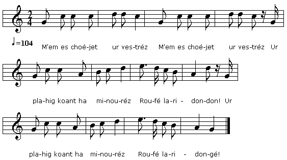

|
BREZHONEK ME 'M EUS CHOAZET UR VESTREZ 1. M'em es choéjet ur vestréz, (bis) Ur plahig koant ha minouréz, Roufé laridondon! Ur plahig koant ha minouréz, Roufé laridongé ! 2. Ur plahig koant ha minouréz, Ha me ia d'hé guélet liés 3. Ha me ia liés d'hé guélet Mar d'an ket ar varh 'han ar droed 4. Mar d'an ket ar marh 'han ar droed. Ataù é han 'n ur mod benek. 5. Tri ré boteu em es uzet E monet bamnoz d'hé guélet... 6. Me gas de men dous a brezant Ur bizeu eur, unan argant. 7. Ur bizeu eur, unan argant, Hag ohpen hoah un diamant 8. Hag ohpen hoah un diamant, Hag ur mouched lién Holland, 9. Hag ur mouched lién Holland, E zo brodet get ned argant 10. Get ned argant é ma brodet; 'R hreiz anehon zo boketet, 11. 'R hreiz anehon zo boketet, Get boketeu ag er véred 12. Mar saùan mé un ti neùé, M'er saùo ar lein ur mañné 13. M'er saoùo ar lein ur mañné, Durheit en dorieu d'er hreisté 14. Durheit en dorieu d'er hreisté, Hag er pignon d'er goleu-dé 15. Hag er pignon d'er goleu-dé; Cheminalieu a blom d'er hlué! Kanet gant Loeiza KADEG e Hañveg |
TRADUCTION FRANCAISE J'AI CHOISI UNE MAÎTRESSE 1. La maîtresse que j'ai choisie, (bis) Est fille unique et fort jolie, Roufé laridondon! Est fille unique et fort jolie, Roufé laridongué! 2. Est fille unique et fort jolie. Je vais souvent voir mon amie. 3. Je vais la voir comme il me plait Si ce n'est à cheval, à pied. 4. Si ce n'est à cheval, à pied. Qu'importe le moyen! J'y vais. 5. Trois paires de souliers usées Pour, tous les soirs, voir mon aimée. 6. Et je la comble de présents: Un anneau d'or, l'autre d'argent. 7. Un anneau d'or, l'autre d'argent, Est-ce assez? Encore un diamant! 8. Est-ce assez? Encore un diamant! Et un châle de drap flamand, 9. Et un châle de drap flamand, Avec des broderies d'argent! 10. De fils d'argent, ce châle, ourdi Et de fleurs, au centre, garni. 11. Une vraie parure princière! Autant de fleurs qu'au cimetière! 12. Et pour lui bâtir sa maison: Je choisirai le haut d'un mont, 13. D'où l'on verra tout le pays, Les portes tournées au midi. 14. La maison défiera le vent Avec son pignon au levant. 15. Et trônant sur chaque pignon Ses deux cheminées bien d'aplomb! Traduction: Christian Souchon (c) 2012 |
ENGLISH TRANSLATION I'VE CHOSEN A MISTRESS 1. Since I have chosen a mistress (twice) A bonny lass, unique heiress, Roufé laridondon! A bonny lass, unique heiress Roufé laridongé! 2. A bonny lass, unique heiress, My wooing her has been ceaseless. 3. How much time into it I put, I don't care: on horseback, on foot, 4. There I go, on foot, on horseback. Of convenient ways there's no lack. 5. Three pairs of shoes already spoilt: I count for nothing my foot boils. 6. To my Sweetheart presents I bring: Of gold and of silver a ring. 7. One of gold and one of silver A diamond on it, moreover. 8. Is a diamond ring not enough? A Holland shawl, soft as fluff stuff! 9. A shawl from Holland, as I said, All embroidered with silver thread. 10. Of silver thread embroidered all With lots a flowers, large and small. 11. Of flowers a fair scenery As displayed in a cemetery. 12. I will build, to live with my spouse, Atop a hill a fine new house, 13. A fine new house atop a hill With its doors facing South, I will. 14. A gable it shall have, facing The rising sun in the morning, 15. And on top of these gables, there Are chimneys pointing in the air. Translated by Ch. Souchon (c) 2012 |